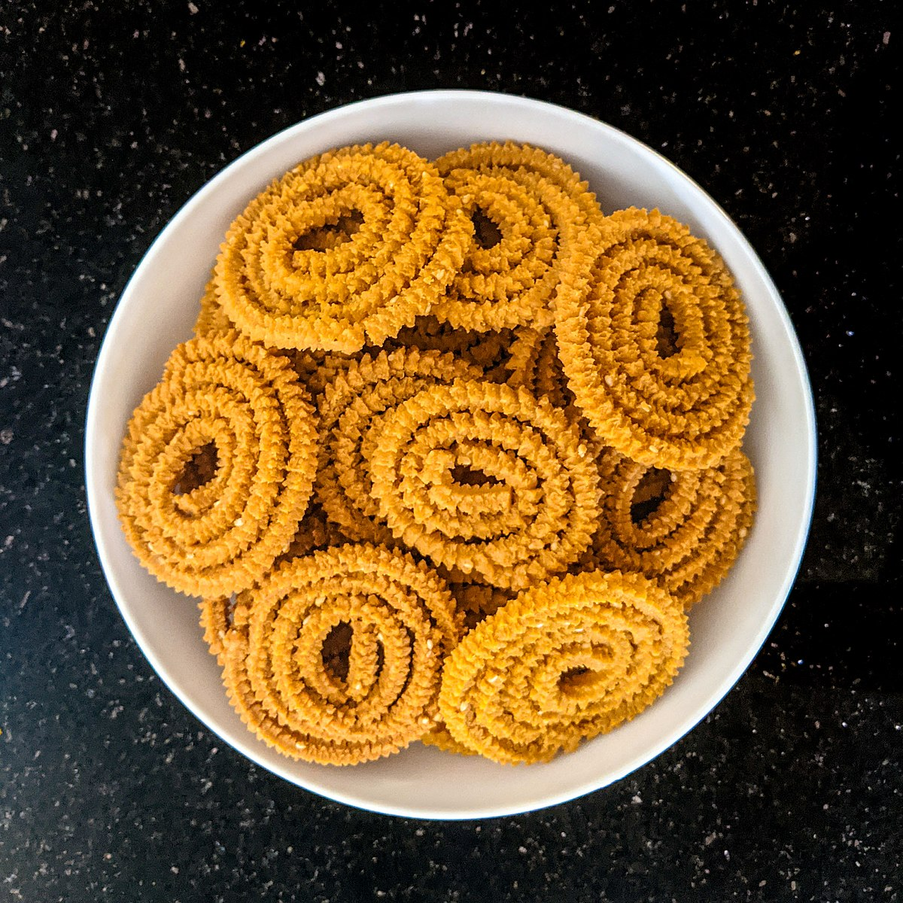

Chakli

Chakli, also known as Murukku, is a crispy and savory Indian snack made with rice flour, chickpea flour, and spices. This popular snack is often prepared during festivals and celebrations, enjoyed with tea or on its own as a crunchy treat.
Ingredients:
- 1 cup rice flour
- 1/4 cup chickpea flour (besan)
- 1 tablespoon cumin seeds
- 1 tablespoon sesame seeds
- 1/4 teaspoon turmeric powder
- 1/4 teaspoon red chili powder
- Salt to taste
- 1 tablespoon butter
- Water (as required to make dough)
- Oil for frying
Instructions:
-
Prepare the dough:
- In a large mixing bowl, combine rice flour, chickpea flour, cumin seeds, sesame seeds, turmeric, red chili powder, and salt.
- Add melted butter and mix well.
- Gradually add water to make a smooth dough (not too soft or too hard).
-
Shape the Chakli:
- Take a small portion of the dough and shape it into a coil using a chakli maker or by hand, making sure the ends are sealed.
- Repeat the process until all the dough is used.
-
Fry the Chaklis:
- Heat oil in a pan for deep frying.
- Once the oil is hot, fry the chaklis in batches until golden brown and crispy.
- Drain on paper towels to remove excess oil.
Serving:
Serve these crispy Chaklis as a tea-time snack or during festive occasions. They stay fresh for a long time and can be stored in an airtight container 😊.